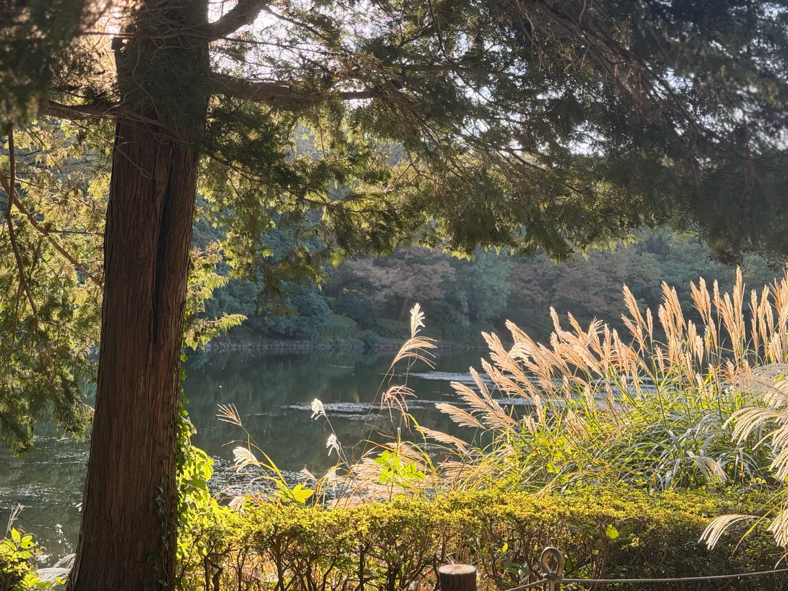
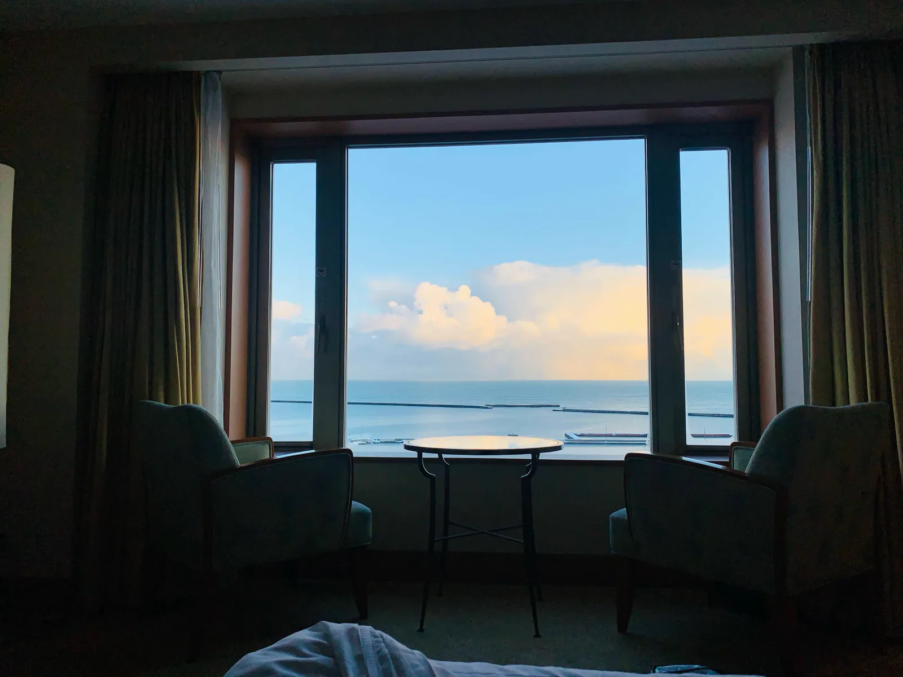
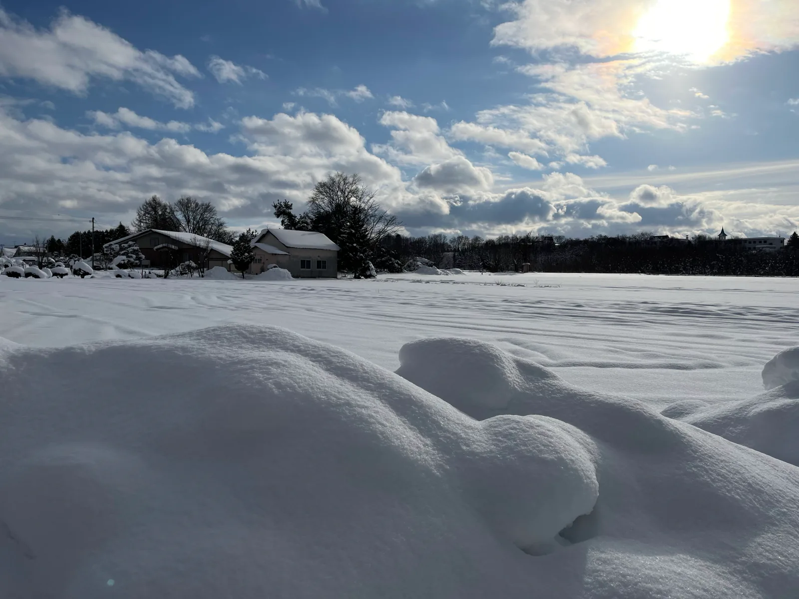
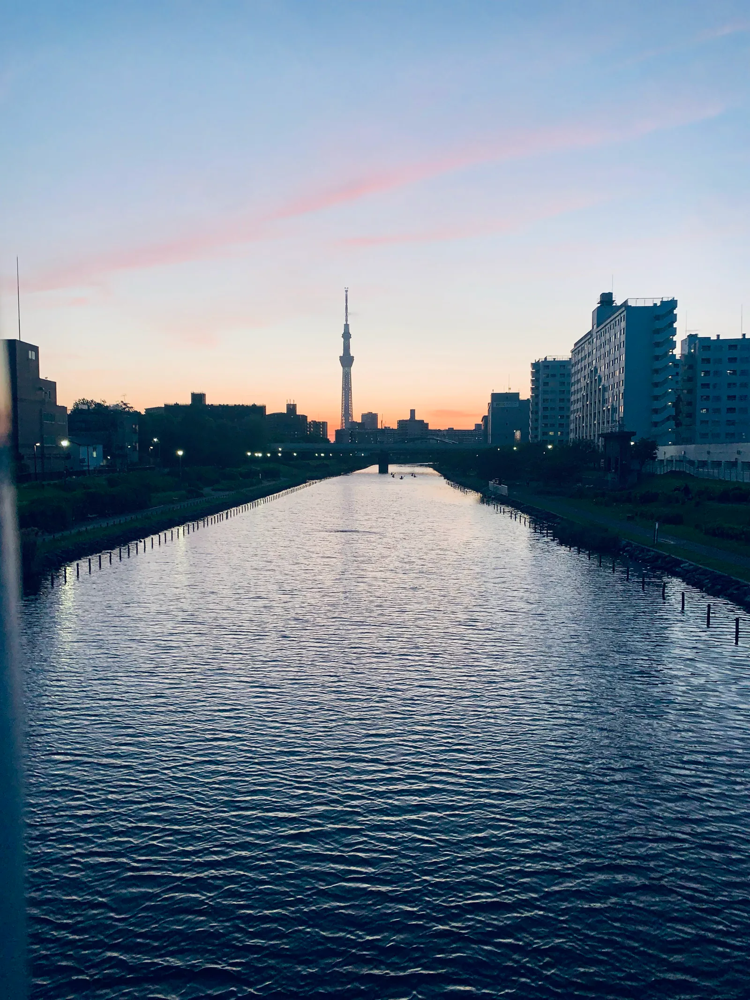
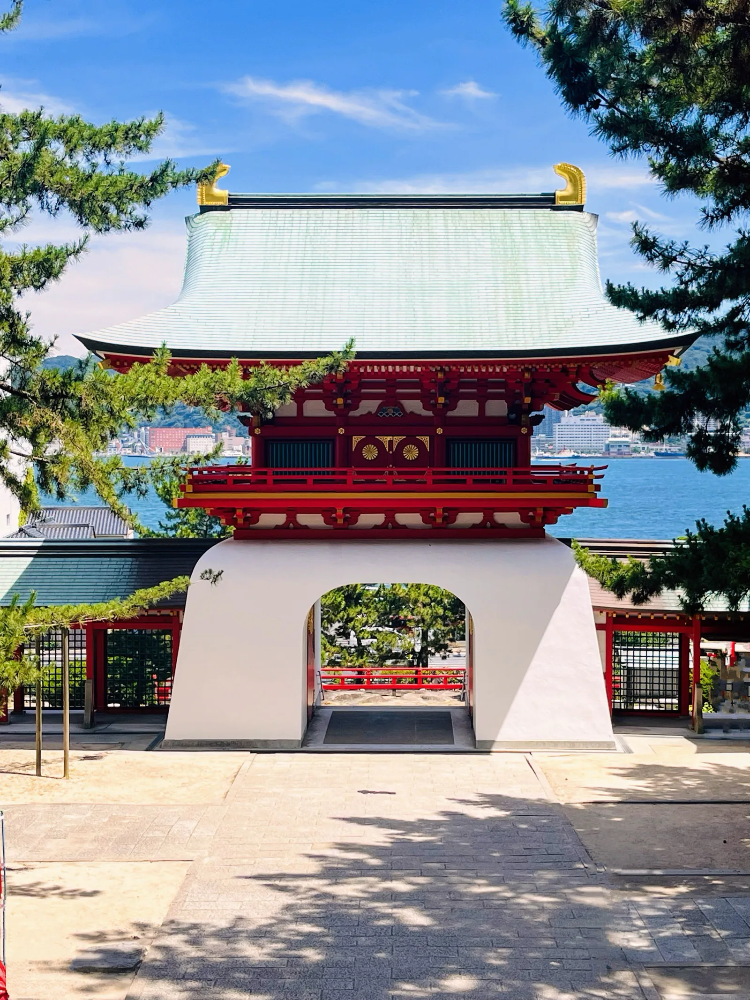
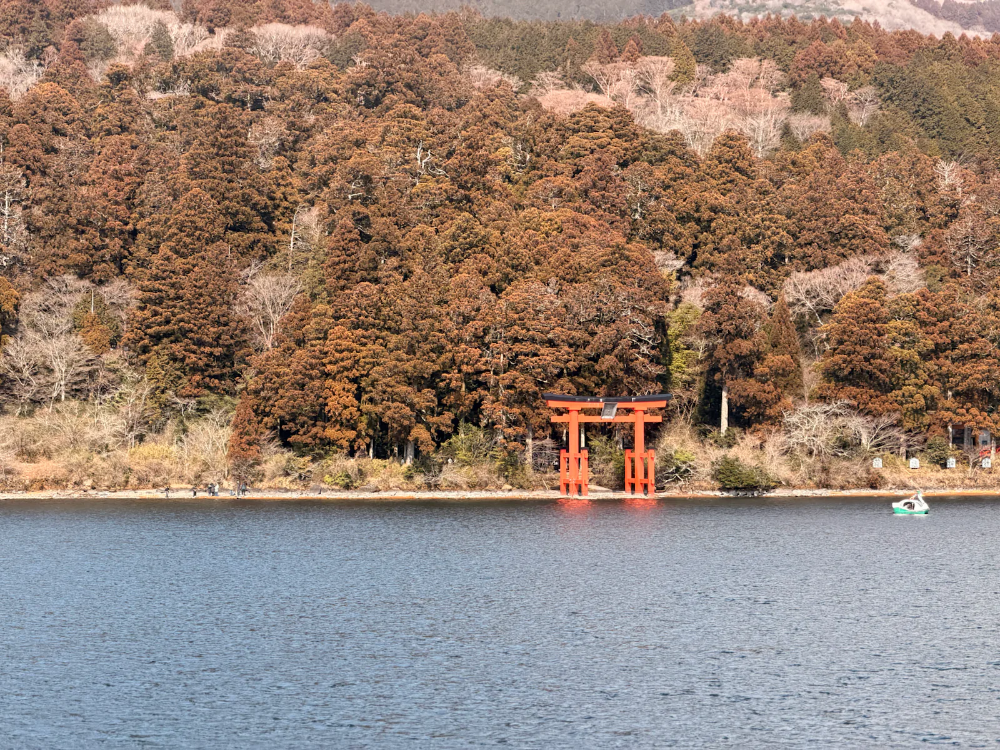

Things I thought were pretty.
Select a photograph to see it larger.

Kudanshita, Tokyo
The last light catching the grasses beside the water.

Otaru, Hokkaido
Morning from the window.
Otaru, Hokkaido
The same waterfront, half an hour earlier.

Asahikawa, Hokkaido
Christmas Day in the snow.

Kyu Nakagawa, Tokyo
A pink sky above the river.

Akama-jingu, Shimonoseki
Red pillars, blue water.
Shimonoseki, Yamaguchi
Blue water beneath the bridge.

Lake Ashinoko, Hakone
A red gate at the water’s edge.
Hakone, Kanagawa
Stars above the trees.
Kudanshita, Tokyo. 9 October 2026. The last light catching the grasses beside the water.
Otaru, Hokkaido. 23 December 2024, 7:37 am. Morning from the window.
Otaru, Hokkaido. 23 December 2024, 7:04 am. The same waterfront, half an hour earlier.
Asahikawa, Hokkaido. 25 December 2024. Christmas Day in the snow.
Kyu Nakagawa, Tokyo. 2 May 2024. A pink sky above the river.
Akama-jingu, Shimonoseki. 12 July 2025. Red pillars, blue water.
Shimonoseki, Yamaguchi. 12 July 2025. Blue water beneath the bridge.
Lake Ashinoko, Hakone. 16 February 2026. A red gate at the water’s edge.
Hakone, Kanagawa. 15 February 2026. Stars above the trees.